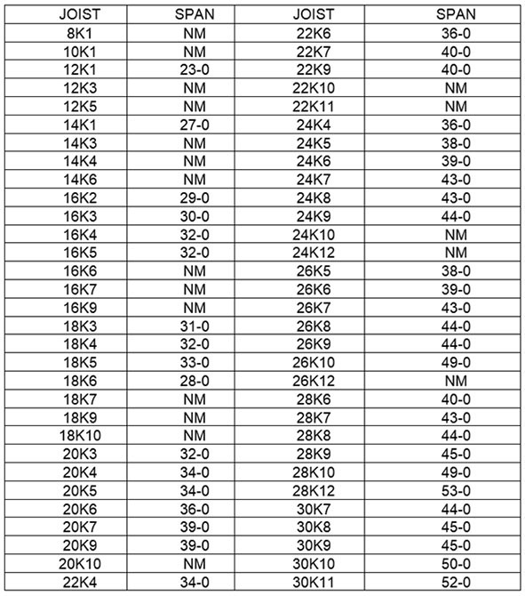
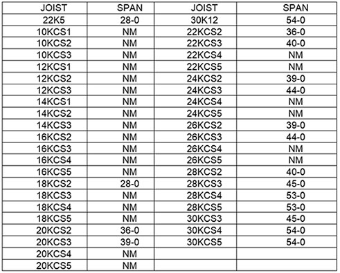
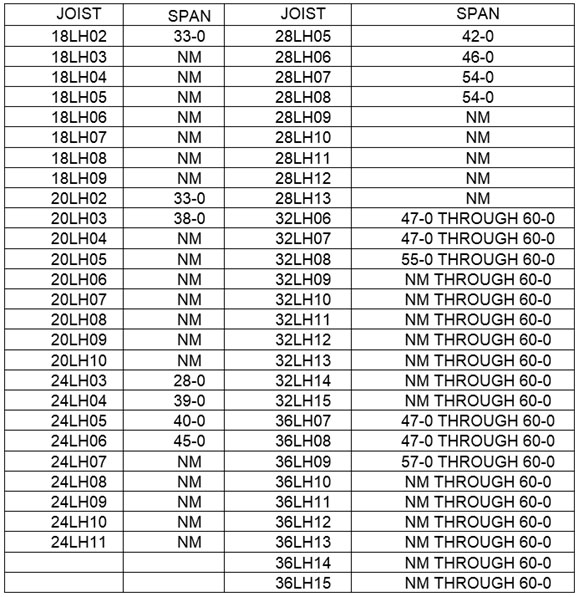
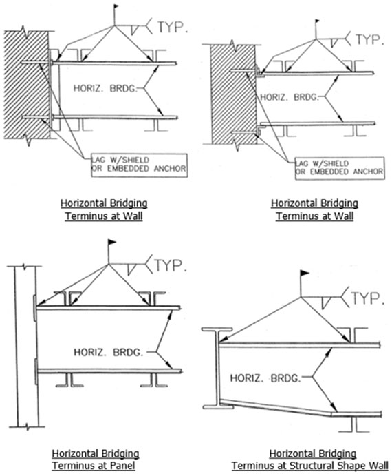
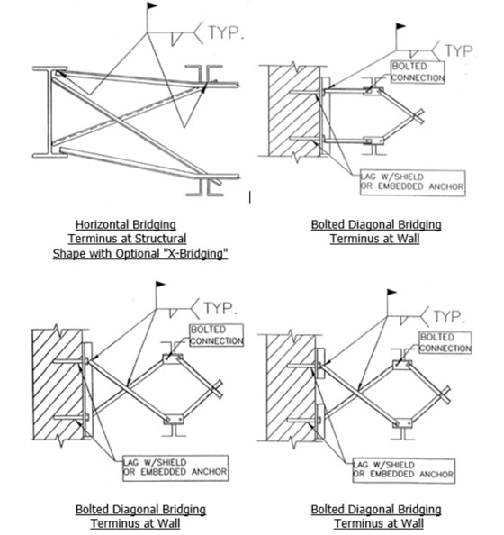
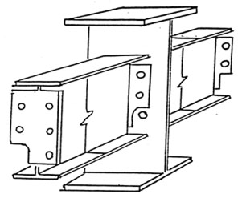
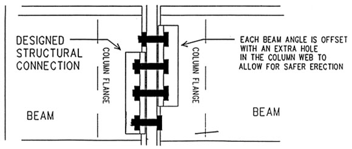

28.C Systems-Engineered Metal Buildings
28.C.01–28.C.03
28.C.01 All of the requirements of the previous section apply to the erection of systems-engineered metal buildings except Sections 28.B.17 (column anchorage) and 28.B.23 (open web steel joists).
- Each structural column shall be anchored by a minimum of four anchor rods or anchor bolts.
- Rigid frames shall have 50% of their bolts or the number of bolts specified by the manufacturer (whichever is greater) installed and tightened on both sides of the web adjacent to each flange before the hoisting equipment is released.
- Construction loads shall not be placed on any structural steel framework unless such framework is safely bolted, welded, or otherwise adequately secured.
- In girt and eave strut-to-frame connections, when girts or eave struts share common connection holes, at least one bolt with its wrench-tight nut shall remain connected to the first member unless a manufacturer-supplied, field-attached seat or similar connection device is present to secure the first member so that the girt or eave strut is always secured against displacement.
- Purlins and girts shall not be used as an anchorage point for a fall arrest system unless written approval is obtained from a QP for Fall Protection.
- Purlins may only be used as a walking/working surface when installing safety systems after all permanent bridging has been installed and fall protection is provided.
- Construction loads may be placed only within a zone that is within 8 ft (2.4 m) of the centerline of the primary support member.
- Both ends of all steel joists or cold-formed joists shall be fully bolted and/or welded to the support structure before:
- Releasing the hoisting cables,
- Allowing an employee on the joists, or
- Allowing any construction loads on the joists.
28.C.02 Falling object protection.
- Securing loose items aloft. All materials, equipment, and tools, which are not in use while aloft, shall be secured against accidental displacement.
- Protection from falling objects other than materials being hoisted shall be provided. The Controlling contractor shall bar other construction processes below steel erection unless overhead protection for the employees below is provided.
28.C.03 Controlled Decking Zones (CDZ) are not permitted.
TABLE 28-1
Erection Bridging for Short Span Joists

TABLE 28-1 (Cont'd)
Erection Bridging for Short Span Joists

NM=diagonal bolted bridging not mandatory for joists under 40 ft (12.1 m).
TABLE 28-2
Erection Bridging for Long Span Joists

NM = Diagonal bolted bridging not mandatory for joists under 40 feet (12.1 m).
FIGURE 28-3
Illustrations of OSHA Bridging Terminus Points

FIGURE 28-3 (Cont'd)
Illustrations of OSHA Bridging Terminus Points

FIGURE 28-3 (Cont'd)
Illustrations of OSHA Bridging Terminus Points
FIGURE 28-4
Clip End Connection

FIGURE 28-5
Staggered (High/Low Connection)

Guidelines for Complying with OSHA Steel Erection Standard,
Paragraph §1926.757(a)(10) and §1926.757(c)(5).
{kind=link}
{kind=link}
{kind=link}
{kind=link}
{kind=link}
{kind=link}
{kind=link}